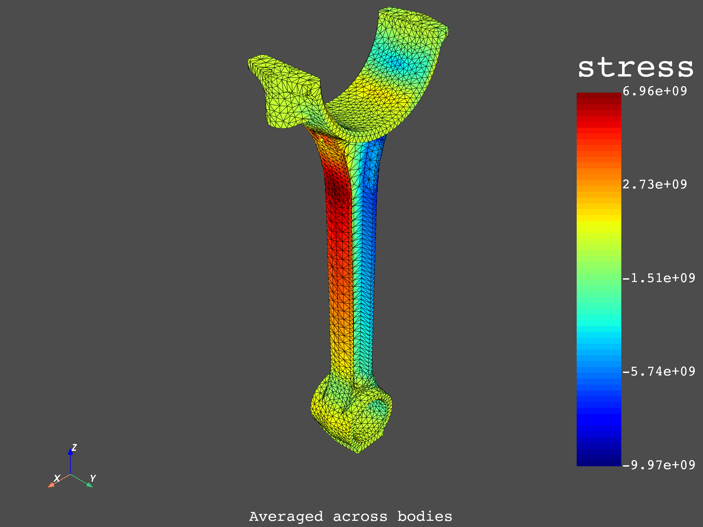
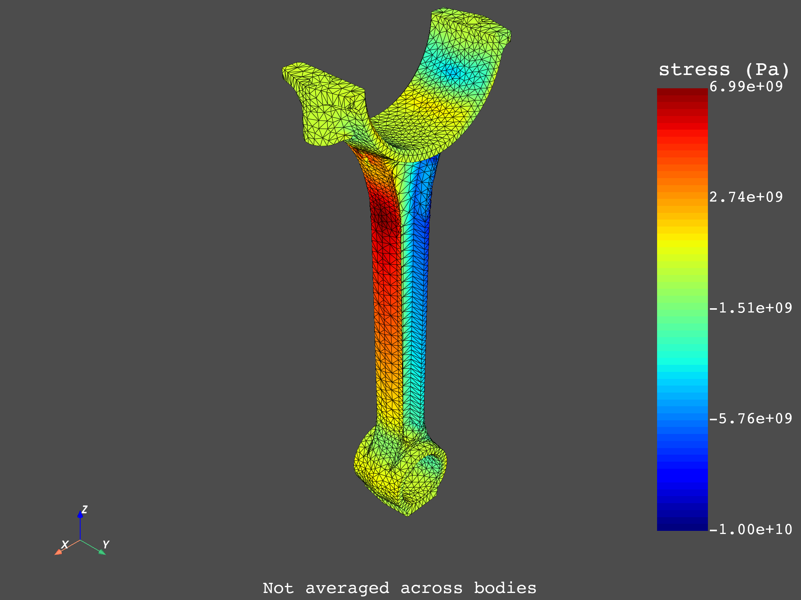

Note
Click here to download the full example code
Average across bodies#
This example shows how to activate and deactivate the DPF option for averaging
across bodies. When a multi-body simulation calculates ElementalNodal fields,
like stresses or strains, you can either activate or deactivate the averaging
of theses fields across the different bodies when they share common nodes. This
likely changes the end results that are shown after postprocessing of the simulation.
Perform the required imports.
from ansys.dpf import core as dpf
from ansys.dpf.core import operators as ops
from ansys.dpf.core import examples
Load the simulation results from an RST file and create a model of it.
analysis = examples.download_piston_rod()
model = dpf.Model(analysis)
print(model)
DPF Model
------------------------------
Static analysis
Unit system: MKS: m, kg, N, s, V, A, degC
Physics Type: Mechanical
Available results:
- displacement: Nodal Displacement
- reaction_force: Nodal Force
- stress: ElementalNodal Stress
- elemental_volume: Elemental Volume
- stiffness_matrix_energy: Elemental Energy-stiffness matrix
- artificial_hourglass_energy: Elemental Hourglass Energy
- thermal_dissipation_energy: Elemental thermal dissipation energy
- kinetic_energy: Elemental Kinetic Energy
- co_energy: Elemental co-energy
- incremental_energy: Elemental incremental energy
- elastic_strain: ElementalNodal Strain
- structural_temperature: ElementalNodal Temperature
------------------------------
DPF Meshed Region:
33337 nodes
18235 elements
Unit: m
With solid (3D) elements
------------------------------
DPF Time/Freq Support:
Number of sets: 3
Cumulative Time (s) LoadStep Substep
1 1.000000 1 1
2 2.000000 2 1
3 3.000000 3 1
To take a look at the system to see how bodies are connected to each other,
extract the mesh of the model and then divide it into different meshes
using the split_mesh operator.
mesh = model.metadata.meshed_region
split_mesh_op = ops.mesh.split_mesh(mesh=mesh, property="mat")
meshes = split_mesh_op.outputs.meshes()
meshes.plot(text="Body meshes")
As you can see in the preceding image, even though the piston rod is one single part, it is composed of two different bodies. Additionally, you can see that the region where the two bodies are bonded together contains nodes that are common between them.
Averaging across bodies with DPF#
To take a look at how the option for averaging across bodies alters the results of the simulation, define two workflows. The first workflow does averaging across bodies, while the second workflow does not. The variable of interest is the stress in the Z direction, which is obtained using the “stress_Z” operator.
![digraph foo {
graph [pad="0", nodesep="0.3", ranksep="0.3"]
node [shape=box, style=filled, fillcolor="#ffcc0", margin="0"];
rankdir=LR;
splines=line;
node [fixedsize=true,width=2.5]
stress01 [label="stress_Z"];
stress02 [label="stress_Z"];
scp01 [label="split_on_property_type"];
subgraph cluster_1 {
ds01 [label="data_src", shape=box, style=filled, fillcolor=cadetblue2];
ds01 -> scp01 [style=dashed];
scp01 -> stress01;
label="Averaging across bodies = Off";
style=filled;
fillcolor=lightgrey;
}
subgraph cluster_2 {
ds02 [label="data_src", shape=box, style=filled, fillcolor=cadetblue2];
inv02 [style=invisible]
ds02 -> stress02 [style=dashed];
stress02 -> inv02 [style=invis]
label="Averaging across bodies = On";
style=filled;
fillcolor=lightgrey;
}
}](../../_images/graphviz-f9b2ff0f61f7f8ab5e13bab492015c7a21d63a54.png)
Averaging across bodies activated#
The extraction of the stresses in the Z direction applies averaging across bodies by default. Thus, you can use a simple workflow.
def average_across_bodies(analysis):
# Extract the stresses in the Z direction (with the average
# across bodies property activated) and plot them.
# Create a model from the simulation results.
model = dpf.Model(analysis)
mesh = model.metadata.meshed_region
# Set the time set of interest to the last time set.
time_set = 3
# Extract the stresses in the Z direction. By default, DPF already applies
# averaging across bodies when extracting the stresses.
stress_op = ops.result.stress_Z()
stress_op.inputs.connect(model)
stress_op.inputs.time_scoping.connect(time_set)
stress_op.inputs.requested_location.connect(dpf.locations.nodal)
stresses = stress_op.outputs.fields_container()
# Find the maximum stress value.
min_max = dpf.operators.min_max.min_max_fc()
min_max.inputs.fields_container.connect(stresses)
max_val = min_max.outputs.field_max()
mesh.plot(stresses, text="Averaged across bodies")
return max(max_val.data)
Averaging across bodies deactivated#
The workflow is more complicated for extracting the stresses without averaging across the bodies of the simulated part. Instead of presenting the workflow as a function, it is broken into various parts with explanations of what is being done.
Create a model from the simulation results and extract its mesh and step information.
model = dpf.Model(analysis)
mesh = model.metadata.meshed_region
time_freq = model.metadata.time_freq_support
time_sets = time_freq.time_frequencies.data.tolist()
Split the meshes of the two bodies so that separate scopings can be created for each one of them. The ‘mat’` label is used to split the mesh by bodies.
mesh_scop_op = ops.scoping.split_on_property_type(mesh=mesh, label1="mat")
mesh_scop_cont = mesh_scop_op.outputs.mesh_scoping()
Given that there are three different time steps, create a scopings container that contains the meshes of each of these time steps.
scop_cont = dpf.ScopingsContainer()
scop_cont.add_label("body")
scop_cont.add_label("time")
for tset in time_sets:
body = 1
for mesh_scop in mesh_scop_cont:
scop_cont.add_scoping(
scoping=mesh_scop, label_space={"body": body, "time": int(tset)}
)
body += 1
print(scop_cont)
DPF Scopings Container with
6 scoping(s)
defined on labels ['body', 'time']
The scopings container has six different scopings, one for each body over each of the three time steps.
Set the time set of interest to the last time set.
time_set = 3
To retrieve the Z stresses without averaging across the two bodies, you must
pass a scopings container that contains their respective meshes as a parameter
to the stress_Z operator. To do this, create a scopings container that contains
the meshes of the two bodies in the desired time step.
scop_list = scop_cont.get_scopings(label_space={"time": time_set})
scopings = dpf.ScopingsContainer()
scopings.add_label("body")
body = 1
for scop in scop_list:
scopings.add_scoping(label_space={"body": body}, scoping=scop)
body += 1
print(scopings)
DPF Scopings Container with
2 scoping(s)
defined on labels ['body']
This contain has only two scopings, one for each body in the last time step.
Extract the stresses in the Z direction.
stress_op = ops.result.stress_Z()
stress_op.inputs.connect(model)
stress_op.inputs.time_scoping.connect(time_set)
stress_op.inputs.mesh_scoping.connect(
scopings
) # This option deactivates averaging across bodies.
stress_op.inputs.requested_location.connect(dpf.locations.nodal)
stresses = stress_op.outputs.fields_container()
print(stresses)
DPF stress(s)Fields Container
with 2 field(s)
defined on labels: body time
with:
- field 0 {body: 1, time: 3} with Nodal location, 1 components and 17281 entities.
- field 1 {body: 2, time: 3} with Nodal location, 1 components and 17610 entities.
Find the maximum value of the stress field for comparison purposes.
min_max = dpf.operators.min_max.min_max_fc()
min_max.inputs.fields_container.connect(stresses)
max_val = min_max.outputs.field_max()
Define the preceding workflow as a function:
def not_average_across_bodies(analysis):
# This function extracts the stresses in the Z direction (with the average
# across bodies option deactivated) and plot them.
model = dpf.Model(analysis)
mesh = model.metadata.meshed_region
time_freq = model.metadata.time_freq_support
time_sets = time_freq.time_frequencies.data.tolist()
mesh_scop_op = ops.scoping.split_on_property_type(mesh=mesh, label1="mat")
mesh_scop_cont = mesh_scop_op.outputs.mesh_scoping()
scop_cont = dpf.ScopingsContainer()
scop_cont.add_label("body")
scop_cont.add_label("time")
for tset in time_sets:
body = 1
for mesh_scop in mesh_scop_cont:
scop_cont.add_scoping(
scoping=mesh_scop, label_space={"body": body, "time": int(tset)}
)
body += 1
time_set = 3
scop_list = scop_cont.get_scopings(label_space={"time": time_set})
scopings = dpf.ScopingsContainer()
scopings.add_label("body")
body = 1
for scop in scop_list:
scopings.add_scoping(label_space={"body": body}, scoping=scop)
body += 1
stress_op = ops.result.stress_Z()
stress_op.inputs.connect(model)
stress_op.inputs.time_scoping.connect(time_set)
stress_op.inputs.mesh_scoping.connect(scopings)
stress_op.inputs.requested_location.connect(dpf.locations.nodal)
stresses = stress_op.outputs.fields_container()
min_max = dpf.operators.min_max.min_max_fc()
min_max.inputs.fields_container.connect(stresses)
max_val = min_max.outputs.field_max()
meshes.plot(stresses, text="Not averaged across bodies")
return max(max_val.data)
Plot and compare the results#
Plot and compare the results. The first plot shows the stress distribution when averaging across bodies is activated. The second plot shows the stress distribution when averaging across bodies is deactivated.
max_avg_on = average_across_bodies(analysis)
max_avg_off = not_average_across_bodies(analysis)
- 
- 
diff = abs(max_avg_on - max_avg_off) / max_avg_off * 100
print(
"Max stress when averaging across bodies is activated: {:.2f} Pa".format(max_avg_on)
)
print(
"Max stress when averaging across bodies is deactivated: {:.2f} Pa".format(
max_avg_off
)
)
print(
"The maximum stress value when averaging across bodies is ACTIVATED \
is {:.2f}% LOWER than when it is DEACTIVATED".format(
diff
)
)
Max stress when averaging across bodies is activated: 6958243299.56 Pa
Max stress when averaging across bodies is deactivated: 6988756864.00 Pa
The maximum stress value when averaging across bodies is ACTIVATED is 0.44% LOWER than when it is DEACTIVATED
Total running time of the script: ( 0 minutes 5.816 seconds)